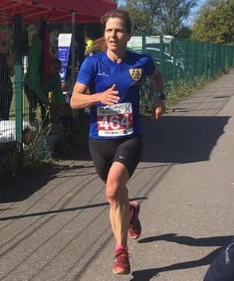

Heather Fitzmaurice won the Highway 10k in Orpington on Sunday 22nd September and was sixteenth overall.

The only other Sevenoaks AC runner in the field was Lionel Steilow who was eighty-fifth - and first M70 - in 57:48.
The full results can be found here.
This result comes two weeks after Heather was third woman, fourteenth overall and second W45 in the Rye Ancient Trails 15k, where Hugh Brennan won the accompanying 30k race with Marion van Lille third in the women's race and Jake Fricker, Nick and Anna Taylor and Russell Crane also well placed.
The full Rye results can be found here.